Hi, I'm
Sophie Pope
An AspiringSoftware Developer
I am an aspiring software developer with a passion for building practical applications that solve real problems.
My strongest language is Python, and I am currently expanding my frontend skills with Javascript while continuing to create projects to deepen my understanding of software development.
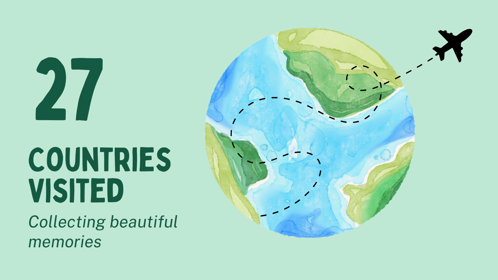
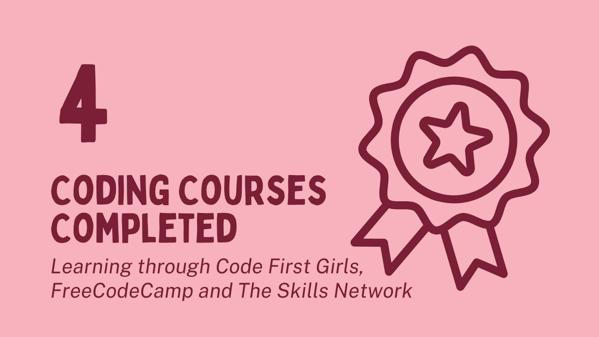
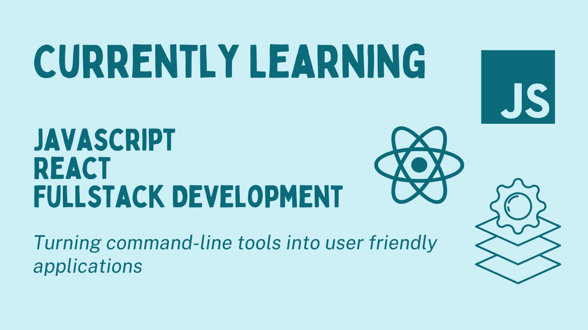
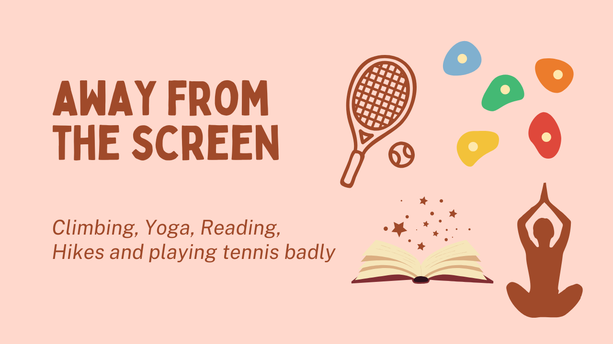
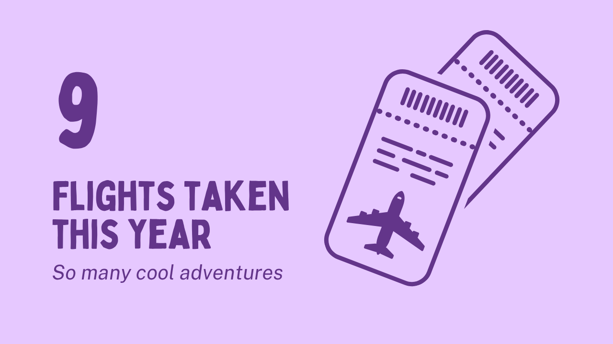
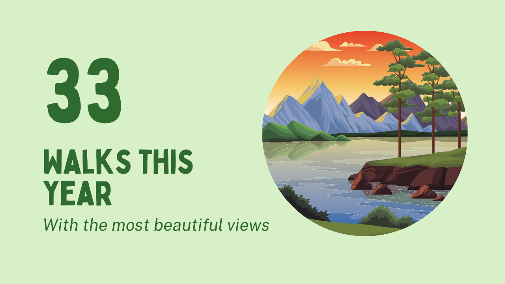
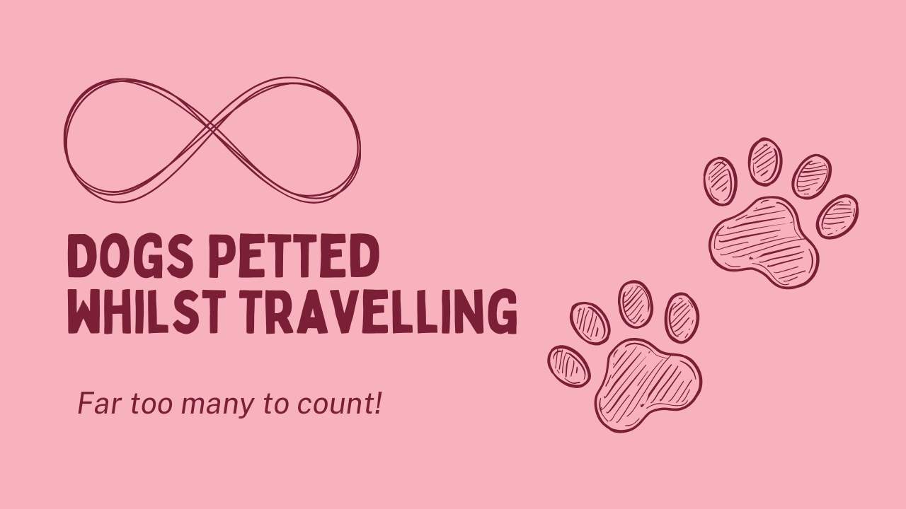
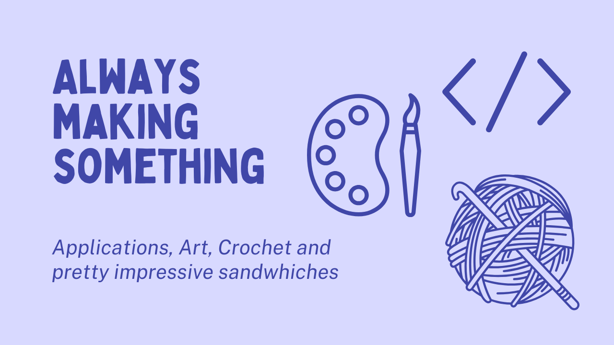
I became interested in of software development because I loved the idea of creating applications from nothing.
I started learning through freeCodeCamp, where I built my first websites with HTML and discovered how rewarding programming could be.
I completed a Software Development Skills Bootcamp, where I learned the fundamentals of programming and explored different areas of software development.
This gave me some confidence and resources to continue learning independently
To strengthen my skills, I joined the Code First Girls Software Engineering pathway.
The course focused on Python, SQL and GitHub with evening classes, weekly assignments, collaborative learning and hands-on projects.
One of the highlights was working as part of a team to develop an educational game using PyGame.
Since completing the course, I've continued to build personal projects to improve my programming skills.
I am currently developing a Fitness Tracker App using JavaScript, React, Python and PostgreSQL while also building this portfolio website to improve my frontend development skills with HTML, CSS and Javascript.
Outside of coding I enjoy travelling, cooking and keeping active. I love tackling new challenges whether that's a difficult boulder or aerial move, planning a trip or experimenting with a new recipe.
Python
PostgreSQL
OOP
A personal finance management application, allowing users to track income, expenses and set monthly budgets

Python
MySQL
A Python-based productivity tool that automatically tracks your current active applications and browser tabs, recording how long you spend on each task. Session data is stored in a PostgreSQL database, providing an active history of your activity and making it easier to analyse how your time is spent across projects.

Python
JavaScript
React
Expo
FastAPI
PostgreSQL
SQL Model
Uvicorn
This project is currently a work in progress... It is a full-stack fitness tracker that I'm currently developing to improve my frontend development skills. The frontend is build with JavaScript, React and Expo, while FastAPI is used to create the backend API. Exercise and user data are stored in a PostgreSQL database with SQL models used to structure and manage the data.

PyGame
Python
MySQL
Space-themed educational game, built with PyGame aimed for 7-10 year olds. Featuring an astronaut (I created the sprite!) flying through 'space', starting with 3 lives, players need to control the astronaut to avoid oncoming asteroids, the player loses a life when they crash into an asteroid. Space related facts appear periodically throughout the game and the high score is shown at the top of the screen and is updated is a player beats it.
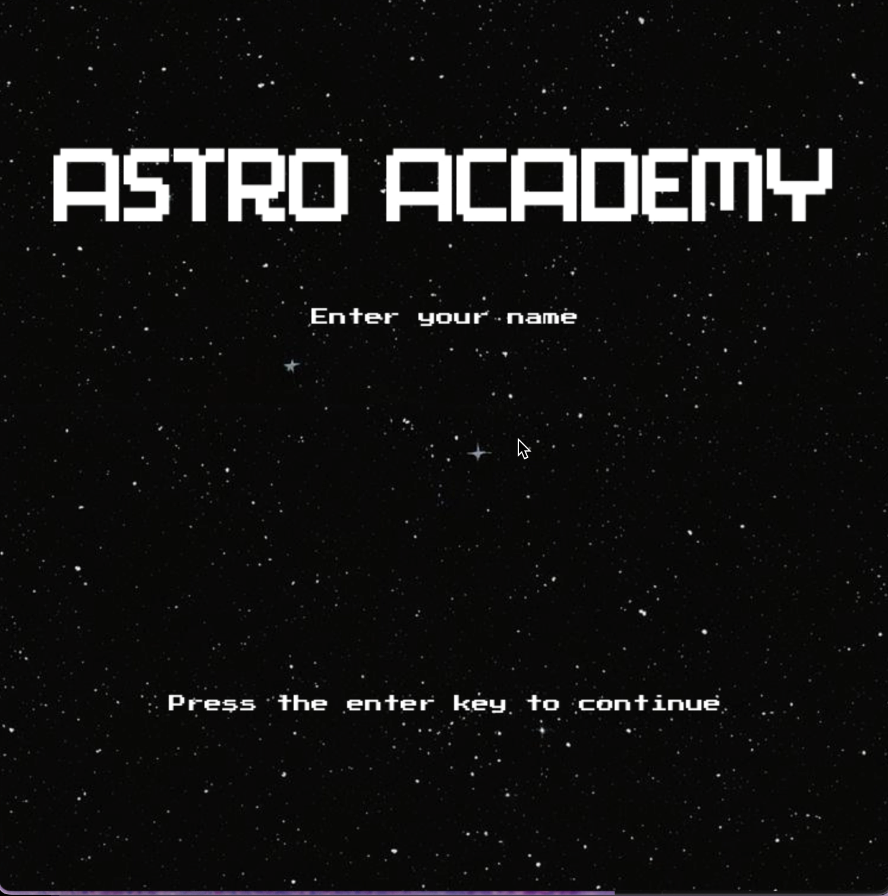
HTML
CSS
JavaScript
A responsive portfolio website that you're on right now! Featuring interactive components, custom animations and project demonstrations, built from scratch using HTML, CSS and JavaScript to improve my frontend development skills.
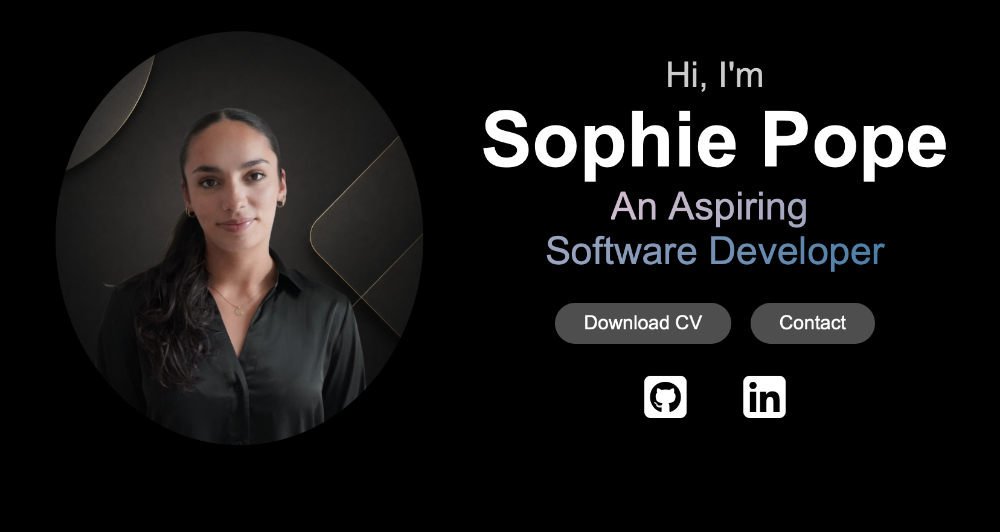
Skills I've learnt along my journey...
Advanced Beginner
My strongest programming language.
I've built multiple python projects using OOP, file handling and SQL databases.
I'm comfortable developing applications independently and I enjoy solving problems through research and documentation, if I need a recap or encounter something new.

Advanced Beginner
Confident in designing relational databases and writing queries for CRUD applications.
Using PostgreSQL and MySQL to create tables, relations, foreign keys and join queries.
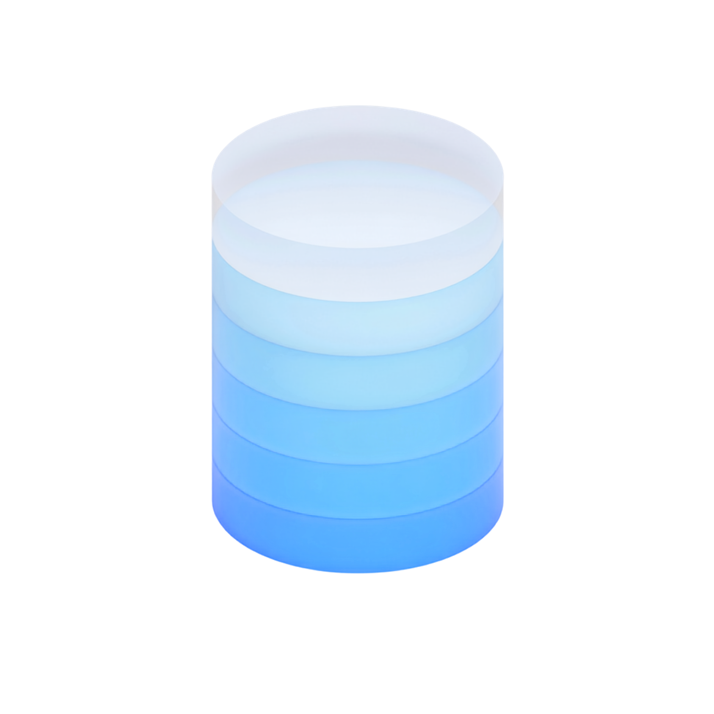
Advanced Beginner
Comfortable building simple webpages from scratch.
Focusing on creating clean, accessible layouts that integrate wiht CSS and Javascript.
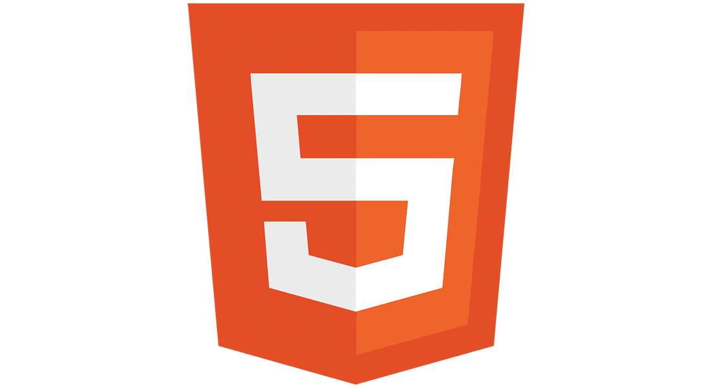
Advanced Beginner
Developing responsive, modern interfaces. Increasingly confident styling HTML elements and building my familiarity with CSS.
Beginner
Currently my main foucs area. Completing foundational learning and applying those concepts by building interactive frontend projects.
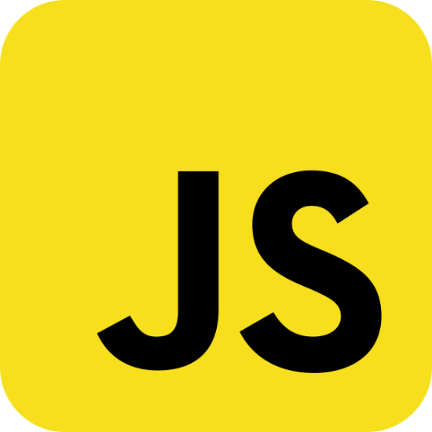